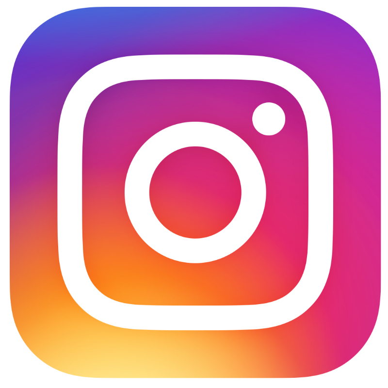
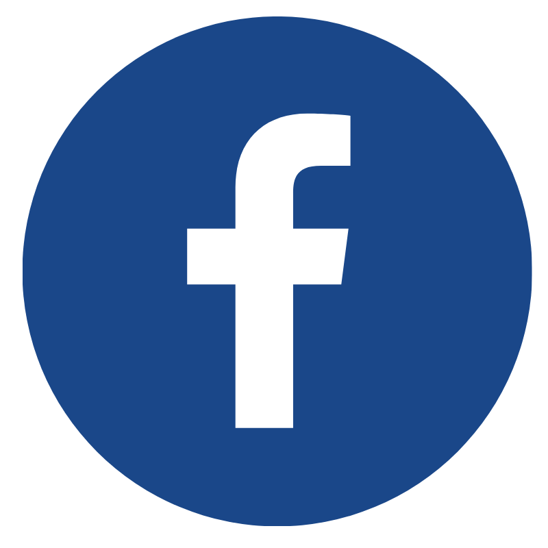
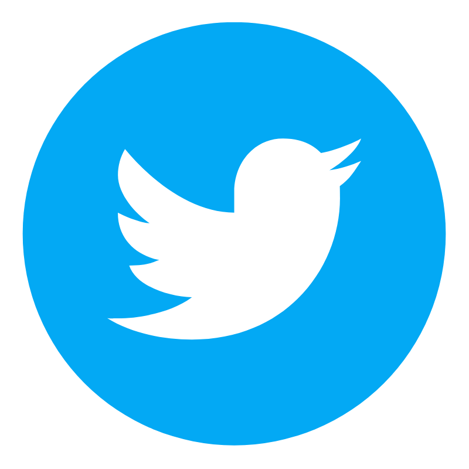

Biografía
William Henry Gates III nació el 28 de octubre de 1955. Es hijo de William H. Gates, un destacado abogado, y de Mary Gates, profesora de la Universidad de Washington y directora del First Interstate Bank. Con ellos y su hermana, dos años mayor, vivió en la ciudad de Seattle, en el estado de Washington.
El 4 de abril de 1975, siendo aún estudiante en la Universidad de Harvard crea la empresa de software Microsoft. En 1976 abandonó la universidad y se trasladó a Albuquerque, sede de MITS, para pactar con esa empresa la cesión del 50 % del lenguaje para computadoras Basic. Al año siguiente, se enteró del éxito de la empresa Apple y de que necesitaban un intérprete de Basic.
En 1980, se reunió con representantes de IBM en Seattle. Ellos querían contar con el sistema operativo CP/M. Él les comento de la existencia de una versión adaptada llamada QDOS u 86DOS, comprometiéndose a conseguir una licencia no exclusiva a fin de adaptarla. Con ello, consiguió venderles la idea del sistema operativo MS-DOS, sin contar con esta, comprando la 86DOS a muy bajo precio al joven programador Tim Paterson.
  